# Create a string seq
seq = 'ATGAAGGGTCC'
# Call the function len() to retrieve the length of the string
size = len(seq)
# Call the function print() to print a text
print('The sequence has', size, 'bases.')The sequence has 11 bases.At the end of this class, you will:
Python is a programming language first released in 1991 and implemented by Guido van Rossum.
It is widely used, with various applications, such as:
It supports different types of programming paradigms (i.e. way of thinking) including the procedural programming paradigm. In this approach, the program moves through a linear series of instructions.
# Create a string seq
seq = 'ATGAAGGGTCC'
# Call the function len() to retrieve the length of the string
size = len(seq)
# Call the function print() to print a text
print('The sequence has', size, 'bases.')The sequence has 11 bases.pandas for tables, matplotlib for graphs, scikit-learn for machine learning…)Python is an interpreted language, this means that it is not directly compiled into machine code (binary instructions that the computer hardware understands). It is executed by an interpreter program that “translates” each line of the code, into instructions that the computer can understand. By extension, the interpreter that is able to read Python scripts is also called Python. So, whenever you want your Python code to run, you must call the Python interpreter.
One way to launch the Python interpreter is to type the following, on the command line of a terminal:
python3You can also try python, /usr/bin/env python3, /usr/bin/python3… There are many ways to call python!
You can see where your current python is located by running which python3.
From this, you can start using python interactively, e.g. run:
print("Hello world")Hello worldTo get out of the Python interpreter, type quit()or exit(), followed by enter. Alternatively, on Linux/Mac press [ctrl + d], on Windows press [ctrl + z].
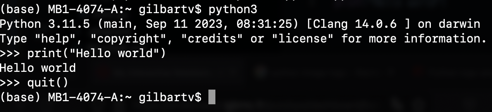
To run a script, create a folder named script, in which a file named intro.py contains:
#!/usr/bin/env python3
# -*- coding: UTF-8 -*-
print("Hello world")and run
./script/intro.pyYou should get the same output as before, that is:
Hello worldThe shebang #! followed by the interpreter /usr/bin/env python3 can be put at the beginning of the script in order to ommit calling python3 in command-line. If you don’t put it, you will have to run python3 script/intro.py instead of simply ./script/intro.py.
The -*- coding: UTF-8 -*- specify the type of encoding to use. UTF-8 is used by default (which means that this line in the script is not necessary). This accepts characters from all languages. Other valid encoding are available, such as ascii (English characters only).
Some common errors can occur at this step:
bash: script/intro.py: No such file or directory i.e. you are not in the right directory to run the file.
Solution: run ls */ and make sure you can find script/: intro.py, if not go to the correct directory by running cd <insert directory name here>, e.g. cd ~/Desktop/swc-python (~ is a shortcut for your home directory)
bash: script/intro.py: Permission denied i.e. you don’t have the right to execute your script.
Solution: run ls -l script/intro.py and make sure you have at least -rwx (read, write, exectute rights) as the first 4 characters, if not run chmod 744 script/intro.py to change your rights.
bash: python3: command not found i.e. you don’t the python3 shortcut.
Solution: start writting python in your shell, then press the Tab key on your keyboard, it should try to autocomplete and give you a set of python shortcuts available. Once you see a shortcut that works e.g. python3.11 or python instead of our python3, you can change the shebang in your script to use it, e.g. #!/usr/bin/env python instead of #!/usr/bin/env python3. You can also check what path to give by running which python or which python3 and then put this path in the shebang, e.g. #!/usr/bin/python3 instead of #!/usr/bin/env python3.
Any Python interpreter can be used as a calculator:
3 + 5 * 423This is great but not very interesting. To do anything useful with data, we need to assign its value to a variable. In Python, we can assign a value to a variable, using the equals sign =. For example, we can track the weight of a patient who weighs 60 kilograms by assigning the value 65 to a variable weight_kg:
weight_kg = 65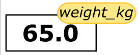
From now on, whenever we use weight_kg, Python will substitute the value we assigned to it. In plain language terms, a variable is a name for a value.
A variable can have a short name (like x and y) or a more descriptive name (seq, motif, genome_file). Rules for Python variable names:
help('keywords') to find the list of keywords).This means that, for example:
€or$ is not a valid variable nameweight0 is a valid variable name, whereas 0weight is notweight, Weight and WEIGHT, are different variableskeywords are different variablesI want to store the weight of patient 2 in a variable. Are the following variables names legal?
2_weight_kg_weight_kgweight_kg-2weight_kg 2You can try to assign a value to these variable names to be sure of your answer!
Python knows various types of data. Three common ones are:
int (\(\mathbb{Z}\)), integersfloat (\(\mathbb{R}\)), real numbersstr, strings or more commonly known as charactersPython will assign a type automatically.
In the example above, variable weight_kg has an integer value of 60. If we want to more precisely track the weight of our patient, we can use a floating point value by executing:
weight_kg = 60.3To create a string, we add single or double quotes around some text. To identify and track a patient throughout our study, we can assign each person a unique identifier by storing it in a string:
patient_id = '001'Once we have data stored with variable names, we can make use of it in calculations. We may want to store our patient’s weight in pounds as well as kilograms:
weight_kg = 65.0
weight_lb = 2.2 * weight_kg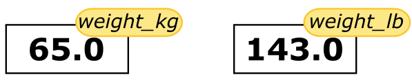
The expression2.2 * weight_kg is evaluated to 143.0, and then this value is assigned to the variable weight_lb (i.e. the sticky noteweight_lbis placed on 143.0). At this point, each variable is “stuck” to completely distinct and unrelated values.
The value of weight_lb is computed, in the moment of assigning the value, from the current value of weight_kg. Modifying weight_kg later on will not modify the value of weight_lb indirectly (i.e. weight_lb is not recomputed every time it is called, its value stays the same)
print(weight_lb)
weight_kg = 100
print(weight_kg, weight_lb)143.0
100 143.0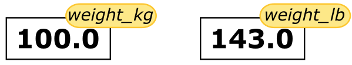
Since weight_lb doesn’t ‘remember’ where its value comes from, it is not updated when we change weight_kg.
To carry out common tasks with data and variables in Python, the language provides us with several built-in functions. To display information to the screen, we use the print function:
print(weight_lb)
print(patient_id)143.0
001We just used a function (also known as calling a function)… But what is a function exactly?
A function stores a piece of code that performs a certain task, and that gets run when called. It usually takes some data as input (parameters that are required or optional), and usually returns an output (that can be of any type). Some functions are predefined, like print() that prints values, or len() that calculates the length of a variable. We will also learn how to create our own later on.
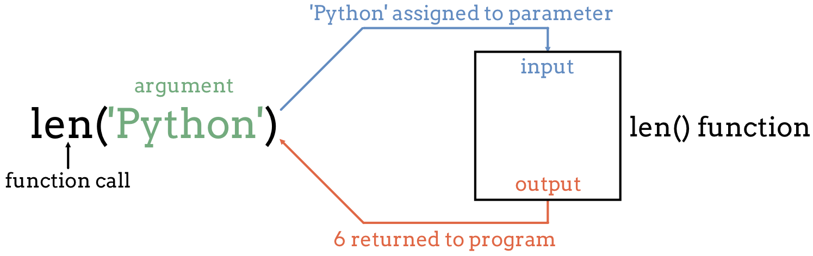
To run a function, write its name followed by parentheses. Parameters are added inside the parentheses as follow:
print(patient_id)
len(patient_id)0013We can display multiple things at once using only one print() call:
print(patient_id, 'weight in kilograms:', weight_kg)001 weight in kilograms: 100We can also call a function inside of another function call. For example, Python has a built-in function called round() that rounds a value:
print(patient_id, 'weight in kilograms:', round(weight_kg))001 weight in kilograms: 100Moreover, we can do arithmetic with variables right inside the print function:
print('weight in pounds:', 2.2 * weight_kg)weight in pounds: 220.00000000000003The above command, however, did not change the value of weight_kg:
print(weight_kg)100To change the value of the weight_kg variable, we have to assign weight_kg a new value using the equals = sign:
weight_kg = 65.0
print('weight in kilograms is now:', weight_kg)weight in kilograms is now: 65.0To get more information about a function, use the help() function.
Let’s see the help for the round() function:
help(round)Help on built-in function round in module builtins:
round(number, ndigits=None)
Round a number to a given precision in decimal digits.
The return value is an integer if ndigits is omitted or None. Otherwise
the return value has the same type as the number. ndigits may be negative.
Here the function round() needs as input number a numerical value. As an option, one can add ndigits the number of decimal places to be used with digits. If an option is not provided, a default value is given. In the case of the option ndigits, 0 is the default. The function returns a numerical value (more specifically a floating point number), that corresponds to the rounded value. This value, just like any other, can be stored in a variable.
rounded_weight_kg = round(weight_kg)
print(rounded_weight_kg)65If you provide the parameters in the exact same order as they are defined, you don’t have to name them. If you name the parameters you can switch their order. As good practice, put all required parameters first.
round(5.76543, 2) 5.77round(ndigits = 2, number = 5.76543) 5.77In Table 3.1 you will find some basic but useful python functions:
| Function | Description |
|---|---|
print() |
Print into the screen the values given in argument. |
help() |
Execute the built-in help system |
quit() or exit() |
Exit from Python |
len() |
Return the length of an object |
round() |
Round a numbers |
To get more information about a function or an operator, you can use the help() function. For example, in interactive mode, run help(print) to display the help of the print() function, giving you information about the input and output of this function. If you need information about an operator, you will have to put it into quotes, e.g. help('+')
If the help is long, press [enter] to get the next line or [space] to get the next ‘page’ of information.
To quit the help, press q.
Every built-in function has extensive documentation that can also be found online. You can also search the internet when having issues. Paste the last line of your error message or the word “python” and a short description of what you want to do into your favorite search engine and you will usually find several examples where other people have encountered the same problem and came looking for help.
Copying and pasting code (from a human or a AI chatbot) is risky unless you understand exactly what it is doing!
You will probably receive some useful guidance by presenting your error message to the chatbot and asking it what went wrong. However, the way this help is provided by the chatbot is different. Answers on StackOverflow have (probably) been given by a human as a direct response to the question asked. But generative AI chatbots, which are based on an advanced statistical model, respond by generating the most likely sequence of text that would follow the prompt they are given.
While responses from generative AI tools can often be helpful, they are not always reliable. These tools sometimes generate plausible but incorrect or misleading information, so (just as with an answer found on the internet) it is essential to verify their accuracy. You need the knowledge and skills to be able to understand these responses, to judge whether or not they are accurate, and to fix any errors in the code it offers you.
In addition to asking for help, programmers can use generative AI tools to generate code from scratch; extend, improve and reorganise existing code; translate code between programming languages; figure out what terms to use in a search of the internet; and more. However, there are drawbacks that you should be aware of:
Remember that for this lesson:
Read the help of the print() function. Print several variables (e.g print(weight_kg, weight_lb)). Using one of the parameters, add a separator in between each value.
Basic built-in functions are useful, but what is even more useful is the possibility to use functions that other people have written, and that are available in Python packages (you might also encounter the terms library or module, we will use them equivalently in this course).
A python package contains a set of function to perform specific tasks.
There are built-in packages that come with Python, and there are also third-party packages that you can install and use. For scientific computing, the most commonly used packages are third-party packages like numpy for numerical computing, pandas for data manipulation and analysis, matplotlib for data visualization, and scikit-learn for machine learning.
A package needs to be installed to your computer one time. But loaded in your script every time you want to use it.
Installing a package is done outside of the python interpreter, in command line in a terminal.
You can install a package with pip. It should have been automatically installed with your python, to make sure that you have it you can run:
# In Linux/MacOS
python -m pip --version
# In Windows
py -m pip --versionIf it does not work, check out pip documentation
To install a package called pandas, you must run:
# In Linux/MacOS
python -m pip install pandas
# In Windows
py -m pip install pandasTo get more information about pip, check out the full documentation.
When you wish to use a package in a python script, you’ll need to import it, by writing inside of you script:
import pandasImporting a library is like getting a piece of lab equipment out of a storage locker and setting it up on the bench. Libraries provide additional functionality to the basic Python package, much like a new piece of equipment adds functionality to a lab space.
Pandas is a package used to work with data sets, in order to easily clean, manipulate, explore and analyze data. Once we’ve imported the library, we can ask the library to read our data file for us:
# Make sure this is the correct path for you! You are in the directory from where you execute the script.
pandas.read_csv('data/inflammation-01.csv', index_col=0)| Day1 | Day2 | Day3 | Day4 | Day5 | Day6 | Day7 | Day8 | Day9 | Day10 | ... | Day31 | Day32 | Day33 | Day34 | Day35 | Day36 | Day37 | Day38 | Day39 | Day40 | |
|---|---|---|---|---|---|---|---|---|---|---|---|---|---|---|---|---|---|---|---|---|---|
| Patient1 | 0 | 0 | 1 | 3 | 1 | 2 | 4 | 7 | 8 | 3 | ... | 4 | 4 | 5 | 7 | 3 | 4 | 2 | 3 | 0 | 0 |
| Patient2 | 0 | 1 | 2 | 1 | 2 | 1 | 3 | 2 | 2 | 6 | ... | 3 | 5 | 4 | 4 | 5 | 5 | 1 | 1 | 0 | 1 |
| Patient3 | 0 | 1 | 1 | 3 | 3 | 2 | 6 | 2 | 5 | 9 | ... | 10 | 5 | 4 | 2 | 2 | 3 | 2 | 2 | 1 | 1 |
| Patient4 | 0 | 0 | 2 | 0 | 4 | 2 | 2 | 1 | 6 | 7 | ... | 3 | 5 | 6 | 3 | 3 | 4 | 2 | 3 | 2 | 1 |
| Patient5 | 0 | 1 | 1 | 3 | 3 | 1 | 3 | 5 | 2 | 4 | ... | 9 | 6 | 3 | 2 | 2 | 4 | 2 | 0 | 1 | 1 |
| Patient6 | 0 | 0 | 1 | 2 | 2 | 4 | 2 | 1 | 6 | 4 | ... | 8 | 4 | 7 | 3 | 5 | 4 | 4 | 3 | 2 | 1 |
| Patient7 | 0 | 0 | 2 | 2 | 4 | 2 | 2 | 5 | 5 | 8 | ... | 8 | 8 | 4 | 2 | 3 | 5 | 4 | 1 | 1 | 1 |
| Patient8 | 0 | 0 | 1 | 2 | 3 | 1 | 2 | 3 | 5 | 3 | ... | 4 | 9 | 3 | 5 | 2 | 5 | 3 | 2 | 2 | 1 |
| Patient9 | 0 | 0 | 0 | 3 | 1 | 5 | 6 | 5 | 5 | 8 | ... | 4 | 6 | 4 | 7 | 6 | 3 | 2 | 1 | 0 | 0 |
| Patient10 | 0 | 1 | 1 | 2 | 1 | 3 | 5 | 3 | 5 | 8 | ... | 2 | 5 | 4 | 5 | 1 | 4 | 1 | 2 | 0 | 0 |
| Patient11 | 0 | 1 | 0 | 0 | 4 | 3 | 3 | 5 | 5 | 4 | ... | 4 | 3 | 4 | 5 | 5 | 3 | 3 | 2 | 2 | 1 |
| Patient12 | 0 | 1 | 0 | 0 | 3 | 4 | 2 | 7 | 8 | 5 | ... | 8 | 3 | 5 | 4 | 5 | 5 | 4 | 0 | 1 | 1 |
| Patient13 | 0 | 0 | 2 | 1 | 4 | 3 | 6 | 4 | 6 | 7 | ... | 5 | 4 | 7 | 3 | 5 | 4 | 2 | 3 | 0 | 1 |
| Patient14 | 0 | 0 | 0 | 0 | 1 | 3 | 1 | 6 | 6 | 5 | ... | 5 | 8 | 7 | 4 | 6 | 4 | 1 | 3 | 0 | 0 |
| Patient15 | 0 | 1 | 2 | 1 | 1 | 1 | 4 | 1 | 5 | 2 | ... | 8 | 2 | 5 | 1 | 3 | 4 | 2 | 0 | 2 | 0 |
| Patient16 | 0 | 1 | 1 | 0 | 1 | 2 | 4 | 3 | 6 | 4 | ... | 10 | 9 | 5 | 6 | 5 | 3 | 4 | 2 | 2 | 0 |
| Patient17 | 0 | 0 | 0 | 0 | 2 | 3 | 6 | 5 | 7 | 4 | ... | 9 | 8 | 7 | 5 | 3 | 1 | 4 | 0 | 2 | 1 |
| Patient18 | 0 | 0 | 0 | 1 | 2 | 1 | 4 | 3 | 6 | 7 | ... | 2 | 3 | 6 | 5 | 4 | 2 | 3 | 0 | 1 | 0 |
| Patient19 | 0 | 0 | 2 | 1 | 2 | 5 | 4 | 2 | 7 | 8 | ... | 6 | 9 | 2 | 1 | 1 | 2 | 2 | 0 | 1 | 0 |
| Patient20 | 0 | 1 | 2 | 0 | 1 | 4 | 3 | 2 | 2 | 7 | ... | 6 | 6 | 6 | 1 | 1 | 2 | 4 | 3 | 1 | 1 |
| Patient21 | 0 | 1 | 1 | 3 | 1 | 4 | 4 | 1 | 8 | 2 | ... | 3 | 2 | 4 | 3 | 1 | 5 | 4 | 2 | 2 | 0 |
| Patient22 | 0 | 0 | 2 | 3 | 2 | 3 | 2 | 6 | 3 | 8 | ... | 8 | 5 | 6 | 6 | 1 | 4 | 3 | 0 | 2 | 0 |
| Patient23 | 0 | 0 | 0 | 3 | 4 | 5 | 1 | 7 | 7 | 8 | ... | 4 | 4 | 8 | 2 | 6 | 5 | 1 | 0 | 1 | 0 |
| Patient24 | 0 | 1 | 1 | 1 | 1 | 3 | 3 | 2 | 6 | 3 | ... | 5 | 3 | 5 | 1 | 1 | 4 | 4 | 1 | 2 | 0 |
| Patient25 | 0 | 1 | 1 | 1 | 2 | 3 | 5 | 3 | 6 | 3 | ... | 5 | 5 | 6 | 1 | 1 | 1 | 1 | 0 | 2 | 1 |
| Patient26 | 0 | 0 | 2 | 1 | 3 | 3 | 2 | 7 | 4 | 4 | ... | 8 | 5 | 7 | 2 | 2 | 4 | 1 | 1 | 1 | 0 |
| Patient27 | 0 | 0 | 1 | 2 | 4 | 2 | 2 | 3 | 5 | 7 | ... | 7 | 4 | 8 | 2 | 2 | 1 | 3 | 0 | 1 | 1 |
| Patient28 | 0 | 0 | 1 | 1 | 1 | 5 | 1 | 5 | 2 | 2 | ... | 9 | 4 | 5 | 3 | 2 | 5 | 4 | 3 | 2 | 1 |
| Patient29 | 0 | 0 | 2 | 2 | 3 | 4 | 6 | 3 | 7 | 6 | ... | 7 | 7 | 8 | 3 | 5 | 4 | 1 | 3 | 1 | 0 |
| Patient30 | 0 | 0 | 0 | 1 | 4 | 4 | 6 | 3 | 8 | 6 | ... | 6 | 9 | 5 | 5 | 2 | 5 | 2 | 1 | 0 | 1 |
| Patient31 | 0 | 1 | 1 | 0 | 3 | 2 | 4 | 6 | 8 | 6 | ... | 10 | 4 | 2 | 6 | 5 | 5 | 2 | 3 | 2 | 1 |
| Patient32 | 0 | 0 | 2 | 3 | 3 | 4 | 5 | 3 | 6 | 7 | ... | 3 | 6 | 6 | 4 | 5 | 2 | 2 | 3 | 0 | 0 |
| Patient33 | 0 | 1 | 2 | 2 | 2 | 3 | 6 | 6 | 6 | 7 | ... | 5 | 8 | 5 | 2 | 5 | 5 | 2 | 0 | 2 | 1 |
| Patient34 | 0 | 0 | 2 | 1 | 3 | 5 | 6 | 7 | 5 | 8 | ... | 2 | 9 | 7 | 2 | 4 | 2 | 1 | 2 | 1 | 1 |
| Patient35 | 0 | 0 | 1 | 2 | 4 | 1 | 5 | 5 | 2 | 3 | ... | 5 | 6 | 6 | 2 | 3 | 5 | 2 | 1 | 1 | 1 |
| Patient36 | 0 | 0 | 0 | 3 | 1 | 3 | 6 | 4 | 3 | 4 | ... | 3 | 9 | 5 | 1 | 6 | 5 | 4 | 2 | 2 | 0 |
| Patient37 | 0 | 1 | 2 | 2 | 2 | 5 | 5 | 1 | 4 | 6 | ... | 6 | 4 | 5 | 4 | 6 | 3 | 4 | 3 | 2 | 1 |
| Patient38 | 0 | 1 | 1 | 2 | 3 | 1 | 5 | 1 | 2 | 2 | ... | 9 | 9 | 5 | 4 | 4 | 2 | 1 | 0 | 1 | 0 |
| Patient39 | 0 | 1 | 0 | 3 | 2 | 4 | 1 | 1 | 5 | 9 | ... | 5 | 5 | 2 | 1 | 1 | 1 | 1 | 3 | 0 | 1 |
| Patient40 | 0 | 1 | 1 | 3 | 1 | 1 | 5 | 5 | 3 | 7 | ... | 2 | 3 | 6 | 3 | 3 | 5 | 4 | 3 | 2 | 1 |
| Patient41 | 0 | 0 | 0 | 2 | 2 | 1 | 3 | 4 | 5 | 5 | ... | 2 | 9 | 6 | 2 | 2 | 5 | 3 | 0 | 0 | 1 |
| Patient42 | 0 | 0 | 1 | 3 | 3 | 1 | 2 | 1 | 8 | 9 | ... | 4 | 8 | 2 | 6 | 6 | 4 | 2 | 2 | 0 | 0 |
| Patient43 | 0 | 1 | 1 | 3 | 4 | 5 | 2 | 1 | 3 | 7 | ... | 5 | 8 | 5 | 5 | 6 | 1 | 2 | 1 | 2 | 0 |
| Patient44 | 0 | 0 | 1 | 3 | 1 | 4 | 3 | 6 | 7 | 8 | ... | 10 | 2 | 5 | 1 | 5 | 4 | 2 | 1 | 0 | 1 |
| Patient45 | 0 | 1 | 1 | 3 | 3 | 4 | 4 | 6 | 3 | 4 | ... | 10 | 6 | 8 | 7 | 2 | 5 | 4 | 3 | 1 | 1 |
| Patient46 | 0 | 1 | 2 | 2 | 4 | 3 | 1 | 4 | 8 | 9 | ... | 5 | 8 | 4 | 4 | 5 | 2 | 4 | 1 | 1 | 0 |
| Patient47 | 0 | 0 | 2 | 3 | 4 | 5 | 4 | 6 | 2 | 9 | ... | 6 | 7 | 6 | 5 | 1 | 3 | 1 | 0 | 0 | 0 |
| Patient48 | 0 | 1 | 1 | 3 | 1 | 4 | 6 | 2 | 8 | 2 | ... | 6 | 9 | 5 | 6 | 1 | 1 | 2 | 1 | 2 | 1 |
| Patient49 | 0 | 0 | 1 | 3 | 2 | 5 | 1 | 2 | 7 | 6 | ... | 10 | 7 | 6 | 3 | 1 | 5 | 4 | 3 | 0 | 0 |
| Patient50 | 0 | 0 | 1 | 2 | 3 | 4 | 5 | 7 | 5 | 4 | ... | 4 | 6 | 2 | 4 | 1 | 4 | 2 | 2 | 2 | 1 |
| Patient51 | 0 | 1 | 2 | 1 | 1 | 3 | 5 | 3 | 6 | 3 | ... | 7 | 9 | 3 | 3 | 6 | 3 | 4 | 1 | 2 | 0 |
| Patient52 | 0 | 1 | 2 | 2 | 3 | 5 | 2 | 4 | 5 | 6 | ... | 8 | 5 | 4 | 1 | 3 | 2 | 1 | 3 | 1 | 0 |
| Patient53 | 0 | 0 | 0 | 2 | 4 | 4 | 5 | 3 | 3 | 3 | ... | 10 | 8 | 7 | 5 | 2 | 2 | 4 | 1 | 2 | 1 |
| Patient54 | 0 | 0 | 2 | 1 | 1 | 4 | 4 | 7 | 2 | 9 | ... | 7 | 6 | 5 | 4 | 1 | 4 | 2 | 2 | 2 | 1 |
| Patient55 | 0 | 1 | 2 | 1 | 1 | 4 | 5 | 4 | 4 | 5 | ... | 4 | 5 | 5 | 2 | 2 | 5 | 1 | 0 | 0 | 1 |
| Patient56 | 0 | 0 | 1 | 3 | 2 | 3 | 6 | 4 | 5 | 7 | ... | 3 | 5 | 3 | 5 | 4 | 5 | 3 | 3 | 0 | 1 |
| Patient57 | 0 | 1 | 1 | 2 | 2 | 5 | 1 | 7 | 4 | 2 | ... | 7 | 7 | 5 | 6 | 3 | 4 | 2 | 2 | 1 | 1 |
| Patient58 | 0 | 1 | 1 | 1 | 4 | 1 | 6 | 4 | 6 | 3 | ... | 8 | 6 | 6 | 4 | 3 | 5 | 2 | 1 | 1 | 1 |
| Patient59 | 0 | 0 | 0 | 1 | 4 | 5 | 6 | 3 | 8 | 7 | ... | 10 | 8 | 8 | 6 | 5 | 5 | 2 | 0 | 2 | 0 |
| Patient60 | 0 | 0 | 1 | 0 | 3 | 2 | 5 | 4 | 8 | 2 | ... | 8 | 5 | 3 | 5 | 4 | 1 | 3 | 1 | 1 | 0 |
60 rows × 40 columns
The expression pandas.read_csv() is a function call that asks Python to run the function read_csv() which belongs to the pandas library.
The dot notation in Python is used most of all as an object attribute/property specifier or for invoking its function. object.property will give you the value of property from object, while object.function() will invoke on object function.
We used pandas.read_csv() with two parameter:
index_col, an optional parameter that specifies the column number to use as the row names.Since we haven’t told it to do anything else with the function’s output, it displays it. To save the data in memory, we need to assign it to a variable:
data = pandas.read_csv('data/inflammation-01.csv', index_col=0)This statement doesn’t produce any output because we’ve assigned the output to the variable data. If we want to check that the data have been loaded, we can print the variable’s value (to not print everything, we will use .head() method):
print(data.head(5)) Day1 Day2 Day3 Day4 Day5 Day6 Day7 Day8 Day9 Day10 ... \
Patient1 0 0 1 3 1 2 4 7 8 3 ...
Patient2 0 1 2 1 2 1 3 2 2 6 ...
Patient3 0 1 1 3 3 2 6 2 5 9 ...
Patient4 0 0 2 0 4 2 2 1 6 7 ...
Patient5 0 1 1 3 3 1 3 5 2 4 ...
Day31 Day32 Day33 Day34 Day35 Day36 Day37 Day38 Day39 Day40
Patient1 4 4 5 7 3 4 2 3 0 0
Patient2 3 5 4 4 5 5 1 1 0 1
Patient3 10 5 4 2 2 3 2 2 1 1
Patient4 3 5 6 3 3 4 2 3 2 1
Patient5 9 6 3 2 2 4 2 0 1 1
[5 rows x 40 columns]A method is a function that is associated with an object. It is called on the object and can access and modify the object’s data. In Python, methods are defined within classes and are accessed using dot notation.
For example, if you have a pandas object called data, you can call the head() method on it to display the first few rows of the data by writing data.head(). The head() method is a built-in method of pandas DataFrame objects that returns the first n rows of the DataFrame, where n is specified as an argument (default is 5).
To access the help of such a method, you can use help(pandas.DataFrame.head), where pandas is the library, DataFrame is the class of the object, and head is the method you want to learn about.
Methods are a fundamental part of another programming paradigm in Python called object-oriented programming, and allow you to perform operations on objects in a convenient and organized way.
In Python, data can be of different types, and the type of data determines what operations can be performed on it. For example, the + operator on two numbers will add them mathematically, but on two strings it will concatenate them.
There is a function in Python to determine the type of a value or variable, it is called type().
print(type(65))
print(type(65.0))
print(type("Hello world"))
print(type(weight_kg))
print(type(round))<class 'int'>
<class 'float'>
<class 'str'>
<class 'float'>
<class 'builtin_function_or_method'>Let’s see what is the type of the data we loaded with pandas:
print(type(data))<class 'pandas.core.frame.DataFrame'>It is called a DataFrame. A DataFrame is a two-dimensional data structure with labeled axes. It is one of the most commonly used data structures in the pandas library for data manipulation and analysis. It can be thought of as what we generally call a table with rows and columns. Each column can contain different types of data (e.g., integers, floats, strings) and each row represents a record or an observation.
It is actually composed of a pandas data type called Series. A Series is a one-dimensional array-like object that can hold any data type (integers, floats, strings, etc.). It is similar to a column in a table. Each element in a Series has an associated index, which allows for easy access and manipulation of the data. A DataFrame is essentially a collection of Series objects that share the same index.
We can access one column of the data with data.iloc[0] (the first column has index 0, the second column has index 1, etc.) and check its type:
print(data.iloc[0].head(5))
print(type(data.iloc[0]))Day1 0
Day2 0
Day3 1
Day4 3
Day5 1
Name: Patient1, dtype: int64
<class 'pandas.core.series.Series'>Notice that the output of print(data.iloc[0].head(5)) also gives two information: Name:0, dtype: int64. Name:0 indicates the name of the Series, which is 0 in this case (since we didn’t specify column names when loading the data, pandas automatically assigns integer names to the columns starting from 0). dtype: int64 indicates the data type of the values in the Series, which is int64, meaning that the values are 64-bit integers.
We could get these same information by running:
print(data.iloc[0].name)
print(type(data.iloc[0].dtype))Patient1
<class 'numpy.dtype[int64]'>There are also the index (the rownames) on the left of the output, that are not part of the data but are generated by pandas to help us access the data. The index could be also accessed like so:
print(data.iloc[0].index)
print(type(data.iloc[0].index))Index(['Day1', 'Day2', 'Day3', 'Day4', 'Day5', 'Day6', 'Day7', 'Day8', 'Day9',
'Day10', 'Day11', 'Day12', 'Day13', 'Day14', 'Day15', 'Day16', 'Day17',
'Day18', 'Day19', 'Day20', 'Day21', 'Day22', 'Day23', 'Day24', 'Day25',
'Day26', 'Day27', 'Day28', 'Day29', 'Day30', 'Day31', 'Day32', 'Day33',
'Day34', 'Day35', 'Day36', 'Day37', 'Day38', 'Day39', 'Day40'],
dtype='object')
<class 'pandas.core.indexes.base.Index'>Notice that .index and .dtype are attributes of the Series, not methods, since they are not called with parentheses (). An attribute is a value associated with an object, while a method is a function that is associated with an object and can be called to perform an action on that object. In this case, .index and .dtype are attributes that provide information about the Series, while methods like .head() perform actions on the Series.
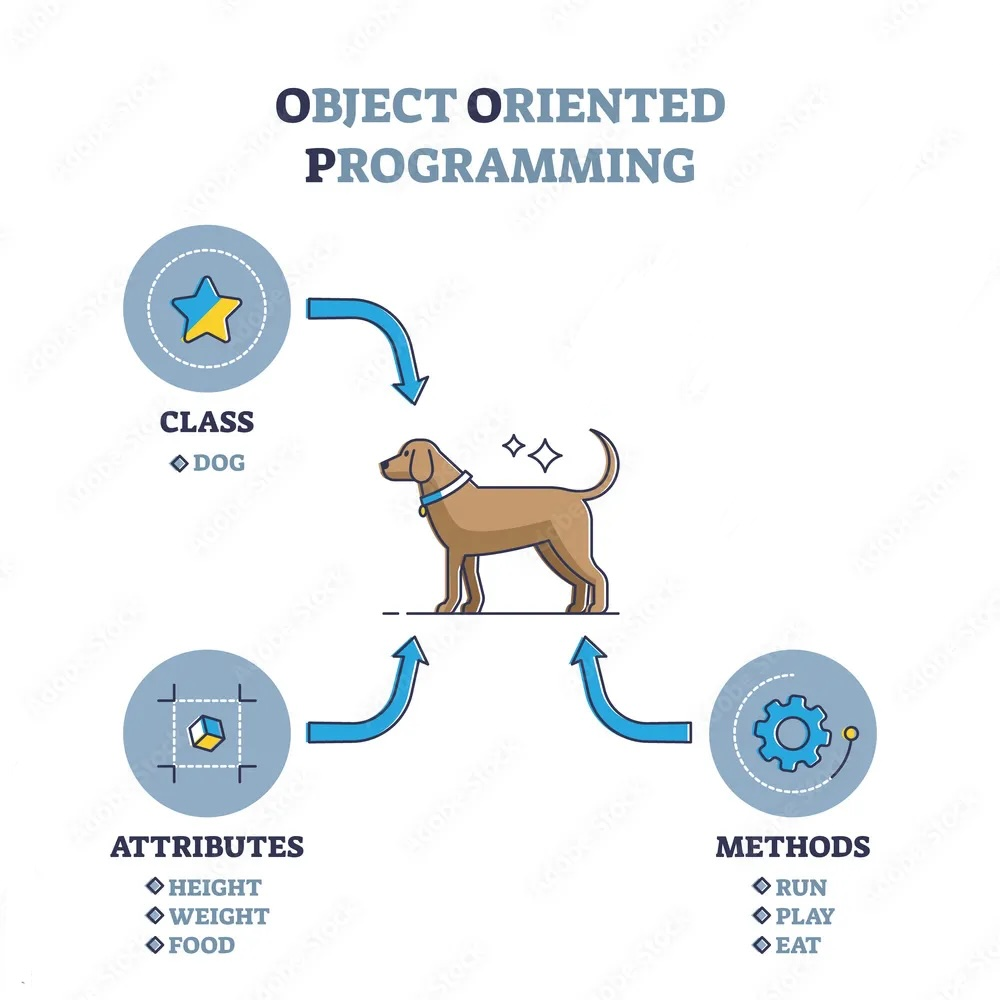
There are many useful methods and attributes in pandas that helps describe a DataFrame.
For example, to get the number of rows and the number of colmuns of the DataFrame:
print(data.shape) # rows x columns i.e. patients x days(60, 40)You get access to the index and column names with:
print(data.columns) # days
print(data.index) # patientsIndex(['Day1', 'Day2', 'Day3', 'Day4', 'Day5', 'Day6', 'Day7', 'Day8', 'Day9',
'Day10', 'Day11', 'Day12', 'Day13', 'Day14', 'Day15', 'Day16', 'Day17',
'Day18', 'Day19', 'Day20', 'Day21', 'Day22', 'Day23', 'Day24', 'Day25',
'Day26', 'Day27', 'Day28', 'Day29', 'Day30', 'Day31', 'Day32', 'Day33',
'Day34', 'Day35', 'Day36', 'Day37', 'Day38', 'Day39', 'Day40'],
dtype='object')
Index(['Patient1', 'Patient2', 'Patient3', 'Patient4', 'Patient5', 'Patient6',
'Patient7', 'Patient8', 'Patient9', 'Patient10', 'Patient11',
'Patient12', 'Patient13', 'Patient14', 'Patient15', 'Patient16',
'Patient17', 'Patient18', 'Patient19', 'Patient20', 'Patient21',
'Patient22', 'Patient23', 'Patient24', 'Patient25', 'Patient26',
'Patient27', 'Patient28', 'Patient29', 'Patient30', 'Patient31',
'Patient32', 'Patient33', 'Patient34', 'Patient35', 'Patient36',
'Patient37', 'Patient38', 'Patient39', 'Patient40', 'Patient41',
'Patient42', 'Patient43', 'Patient44', 'Patient45', 'Patient46',
'Patient47', 'Patient48', 'Patient49', 'Patient50', 'Patient51',
'Patient52', 'Patient53', 'Patient54', 'Patient55', 'Patient56',
'Patient57', 'Patient58', 'Patient59', 'Patient60'],
dtype='object')To explore the data set, use the following methods:
print(data.info()) <class 'pandas.core.frame.DataFrame'>
Index: 60 entries, Patient1 to Patient60
Data columns (total 40 columns):
# Column Non-Null Count Dtype
--- ------ -------------- -----
0 Day1 60 non-null int64
1 Day2 60 non-null int64
2 Day3 60 non-null int64
3 Day4 60 non-null int64
4 Day5 60 non-null int64
5 Day6 60 non-null int64
6 Day7 60 non-null int64
7 Day8 60 non-null int64
8 Day9 60 non-null int64
9 Day10 60 non-null int64
10 Day11 60 non-null int64
11 Day12 60 non-null int64
12 Day13 60 non-null int64
13 Day14 60 non-null int64
14 Day15 60 non-null int64
15 Day16 60 non-null int64
16 Day17 60 non-null int64
17 Day18 60 non-null int64
18 Day19 60 non-null int64
19 Day20 60 non-null int64
20 Day21 60 non-null int64
21 Day22 60 non-null int64
22 Day23 60 non-null int64
23 Day24 60 non-null int64
24 Day25 60 non-null int64
25 Day26 60 non-null int64
26 Day27 60 non-null int64
27 Day28 60 non-null int64
28 Day29 60 non-null int64
29 Day30 60 non-null int64
30 Day31 60 non-null int64
31 Day32 60 non-null int64
32 Day33 60 non-null int64
33 Day34 60 non-null int64
34 Day35 60 non-null int64
35 Day36 60 non-null int64
36 Day37 60 non-null int64
37 Day38 60 non-null int64
38 Day39 60 non-null int64
39 Day40 60 non-null int64
dtypes: int64(40)
memory usage: 19.2+ KB
NoneThe .info() method tells us that our data set has 60 rows (patients) and 40 columns (days), that there are no missing values (60 non-null), and that all the values are integers (int64).
print(data.describe()) Day1 Day2 Day3 Day4 Day5 Day6 Day7 \
count 60.0 60.000000 60.000000 60.000000 60.000000 60.000000 60.000000
mean 0.0 0.450000 1.116667 1.750000 2.433333 3.150000 3.800000
std 0.0 0.501692 0.738566 1.067628 1.140423 1.387902 1.725187
min 0.0 0.000000 0.000000 0.000000 1.000000 1.000000 1.000000
25% 0.0 0.000000 1.000000 1.000000 1.000000 2.000000 2.000000
50% 0.0 0.000000 1.000000 2.000000 2.000000 3.000000 4.000000
75% 0.0 1.000000 2.000000 3.000000 3.000000 4.000000 5.000000
max 0.0 1.000000 2.000000 3.000000 4.000000 5.000000 6.000000
Day8 Day9 Day10 ... Day31 Day32 Day33 \
count 60.000000 60.000000 60.000000 ... 60.000000 60.000000 60.000000
mean 3.883333 5.233333 5.516667 ... 6.066667 5.950000 5.116667
std 1.966600 1.942972 2.281032 ... 2.536958 2.126707 1.637398
min 1.000000 2.000000 2.000000 ... 2.000000 2.000000 2.000000
25% 2.000000 4.000000 3.750000 ... 4.000000 4.000000 4.000000
50% 4.000000 5.000000 6.000000 ... 6.000000 6.000000 5.000000
75% 5.250000 7.000000 7.000000 ... 8.000000 8.000000 6.000000
max 7.000000 8.000000 9.000000 ... 10.000000 9.000000 8.000000
Day34 Day35 Day36 Day37 Day38 Day39 \
count 60.000000 60.000000 60.000000 60.000000 60.0000 60.000000
mean 3.600000 3.300000 3.566667 2.483333 1.5000 1.133333
std 1.796418 1.778401 1.394501 1.127344 1.1717 0.812334
min 1.000000 1.000000 1.000000 1.000000 0.0000 0.000000
25% 2.000000 2.000000 2.000000 2.000000 0.0000 0.000000
50% 4.000000 3.000000 4.000000 2.000000 1.0000 1.000000
75% 5.000000 5.000000 5.000000 4.000000 3.0000 2.000000
max 7.000000 6.000000 5.000000 4.000000 3.0000 2.000000
Day40
count 60.000000
mean 0.566667
std 0.499717
min 0.000000
25% 0.000000
50% 1.000000
75% 1.000000
max 1.000000
[8 rows x 40 columns]The .describe() method gives us some basic statistics about the data column-wise (i.e. day-wise), such as the mean, standard deviation, minimum and maximum values, and the quartiles.
From the mean, we can already see that at the number of inflammation flare-ups increases over time, to then decrease back close to 0.
If we want to get a single number from the DataFrame, we must provide an index in square brackets after the variable name, just as we do in math when referring to an element of a matrix. Our inflammation data has two dimensions, so we will need to use two indices to refer to one specific value:
print('first value in data:', data.iloc[0, 0])
print('middle value in data:', data.iloc[29, 19])first value in data: 0
middle value in data: 16The expression data.iloc[29, 19] accesses the element at row 30, column 20. While this expression may not surprise you, data.iloc[0, 0] might.
Programming languages like R start counting at 1 because that’s what human beings do. Languages like Python count from 0 because it is closer to the way that computers represent arrays (if you are interested in the historical reasons behind counting indices from zero, you can read Mike Hoye’s blog post).
As a result, if we have an MxN array in Python, its indices go from 0 to M-1 on the first axis and 0 to N-1 on the second. It takes a bit of getting used to, but one way to remember the rule is that the index is how many steps we have to take from the start to get the item we want.
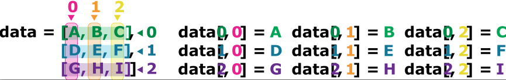
.iloc[29, 19] selects a single element of an array, but we can select whole sections as well. For example, we can select the first ten days (columns) of values for the first four patients (rows) like this:
print(data.iloc[0:4, 0:10]) Day1 Day2 Day3 Day4 Day5 Day6 Day7 Day8 Day9 Day10
Patient1 0 0 1 3 1 2 4 7 8 3
Patient2 0 1 2 1 2 1 3 2 2 6
Patient3 0 1 1 3 3 2 6 2 5 9
Patient4 0 0 2 0 4 2 2 1 6 7The slice 0:4 means, “Start at index 0 and go up to, but not including, index 4”. Again, the up-to-but-not-including takes a bit of getting used to, but the rule is that the difference between the upper and lower bounds is the number of values in the slice.
We don’t have to start slices at 0:
print(data.iloc[5:10, 0:10]) Day1 Day2 Day3 Day4 Day5 Day6 Day7 Day8 Day9 Day10
Patient6 0 0 1 2 2 4 2 1 6 4
Patient7 0 0 2 2 4 2 2 5 5 8
Patient8 0 0 1 2 3 1 2 3 5 3
Patient9 0 0 0 3 1 5 6 5 5 8
Patient10 0 1 1 2 1 3 5 3 5 8We also don’t have to include the upper and lower bound on the slice. If we don’t include the lower bound, Python uses 0 by default; if we don’t include the upper, the slice runs to the end of the axis, and if we don’t include either (i.e., if we use : on its own), the slice includes everything:
small = data.iloc[:3, 36:]
print('small is:')
print(small)small is:
Day37 Day38 Day39 Day40
Patient1 2 3 0 0
Patient2 1 1 0 1
Patient3 2 2 1 1or even:
data.iloc[:3, :]
data.iloc[:, 36:]| Day37 | Day38 | Day39 | Day40 | |
|---|---|---|---|---|
| Patient1 | 2 | 3 | 0 | 0 |
| Patient2 | 1 | 1 | 0 | 1 |
| Patient3 | 2 | 2 | 1 | 1 |
| Patient4 | 2 | 3 | 2 | 1 |
| Patient5 | 2 | 0 | 1 | 1 |
| Patient6 | 4 | 3 | 2 | 1 |
| Patient7 | 4 | 1 | 1 | 1 |
| Patient8 | 3 | 2 | 2 | 1 |
| Patient9 | 2 | 1 | 0 | 0 |
| Patient10 | 1 | 2 | 0 | 0 |
| Patient11 | 3 | 2 | 2 | 1 |
| Patient12 | 4 | 0 | 1 | 1 |
| Patient13 | 2 | 3 | 0 | 1 |
| Patient14 | 1 | 3 | 0 | 0 |
| Patient15 | 2 | 0 | 2 | 0 |
| Patient16 | 4 | 2 | 2 | 0 |
| Patient17 | 4 | 0 | 2 | 1 |
| Patient18 | 3 | 0 | 1 | 0 |
| Patient19 | 2 | 0 | 1 | 0 |
| Patient20 | 4 | 3 | 1 | 1 |
| Patient21 | 4 | 2 | 2 | 0 |
| Patient22 | 3 | 0 | 2 | 0 |
| Patient23 | 1 | 0 | 1 | 0 |
| Patient24 | 4 | 1 | 2 | 0 |
| Patient25 | 1 | 0 | 2 | 1 |
| Patient26 | 1 | 1 | 1 | 0 |
| Patient27 | 3 | 0 | 1 | 1 |
| Patient28 | 4 | 3 | 2 | 1 |
| Patient29 | 1 | 3 | 1 | 0 |
| Patient30 | 2 | 1 | 0 | 1 |
| Patient31 | 2 | 3 | 2 | 1 |
| Patient32 | 2 | 3 | 0 | 0 |
| Patient33 | 2 | 0 | 2 | 1 |
| Patient34 | 1 | 2 | 1 | 1 |
| Patient35 | 2 | 1 | 1 | 1 |
| Patient36 | 4 | 2 | 2 | 0 |
| Patient37 | 4 | 3 | 2 | 1 |
| Patient38 | 1 | 0 | 1 | 0 |
| Patient39 | 1 | 3 | 0 | 1 |
| Patient40 | 4 | 3 | 2 | 1 |
| Patient41 | 3 | 0 | 0 | 1 |
| Patient42 | 2 | 2 | 0 | 0 |
| Patient43 | 2 | 1 | 2 | 0 |
| Patient44 | 2 | 1 | 0 | 1 |
| Patient45 | 4 | 3 | 1 | 1 |
| Patient46 | 4 | 1 | 1 | 0 |
| Patient47 | 1 | 0 | 0 | 0 |
| Patient48 | 2 | 1 | 2 | 1 |
| Patient49 | 4 | 3 | 0 | 0 |
| Patient50 | 2 | 2 | 2 | 1 |
| Patient51 | 4 | 1 | 2 | 0 |
| Patient52 | 1 | 3 | 1 | 0 |
| Patient53 | 4 | 1 | 2 | 1 |
| Patient54 | 2 | 2 | 2 | 1 |
| Patient55 | 1 | 0 | 0 | 1 |
| Patient56 | 3 | 3 | 0 | 1 |
| Patient57 | 2 | 2 | 1 | 1 |
| Patient58 | 2 | 1 | 1 | 1 |
| Patient59 | 2 | 0 | 2 | 0 |
| Patient60 | 3 | 1 | 1 | 0 |
It is also possible to use negative index, -1 will retrieve the last item, -2 the second last item, etc. For example, to get the value last 10 patient on the 1st day, you could use:
print(data.iloc[40:-1, 0])Patient41 0
Patient42 0
Patient43 0
Patient44 0
Patient45 0
Patient46 0
Patient47 0
Patient48 0
Patient49 0
Patient50 0
Patient51 0
Patient52 0
Patient53 0
Patient54 0
Patient55 0
Patient56 0
Patient57 0
Patient58 0
Patient59 0
Name: Day1, dtype: int64One way to remember how slices work is to think of the indices as pointing between characters, with the left edge of the first character numbered 0. Then the right edge of the last character of a string of n characters has index n, for example:
+---+---+---+---+---+---+
| P | y | t | h | o | n |
+---+---+---+---+---+---+
0 1 2 3 4 5 6
-6 -5 -4 -3 -2 -1The first row of numbers gives the position of the indices 0…6 in the string; the second row gives the corresponding negative indices. The slice from i to j consists of all characters between the edges labeled i and j, respectively.
Since we loaded our data with index_col=0, the first column of the data is used as row names (i.e. patient names). We can use these names to slice the data instead of using the integer indices. To do this, we need to use .loc[] instead of .iloc[]:
print(data.loc['Patient1', 'Day10'])
print(data.loc['Patient1',])
print(data.loc['Patient1':'Patient10', 'Day10':'Day20'])
print(data.loc[:'Patient10', 'Day20':])3
Day1 0
Day2 0
Day3 1
Day4 3
Day5 1
Day6 2
Day7 4
Day8 7
Day9 8
Day10 3
Day11 3
Day12 3
Day13 10
Day14 5
Day15 7
Day16 4
Day17 7
Day18 7
Day19 12
Day20 18
Day21 6
Day22 13
Day23 11
Day24 11
Day25 7
Day26 7
Day27 4
Day28 6
Day29 8
Day30 8
Day31 4
Day32 4
Day33 5
Day34 7
Day35 3
Day36 4
Day37 2
Day38 3
Day39 0
Day40 0
Name: Patient1, dtype: int64
Day10 Day11 Day12 Day13 Day14 Day15 Day16 Day17 Day18 \
Patient1 3 3 3 10 5 7 4 7 7
Patient2 6 10 11 5 9 4 4 7 16
Patient3 9 5 7 4 5 4 15 5 11
Patient4 7 10 7 9 13 8 8 15 10
Patient5 4 4 7 6 5 3 10 8 10
Patient6 4 7 6 6 9 9 15 4 16
Patient7 8 6 5 11 9 4 13 5 12
Patient8 3 7 8 8 5 10 9 15 11
Patient9 8 2 4 11 12 10 11 9 10
Patient10 8 6 8 12 5 13 6 13 8
Day19 Day20
Patient1 12 18
Patient2 8 6
Patient3 9 10
Patient4 10 7
Patient5 6 17
Patient6 18 12
Patient7 10 6
Patient8 18 19
Patient9 17 11
Patient10 16 8
Day20 Day21 Day22 Day23 Day24 Day25 Day26 Day27 Day28 \
Patient1 18 6 13 11 11 7 7 4 6
Patient2 6 18 4 12 5 12 7 11 5
Patient3 10 19 14 12 17 7 12 11 7
Patient4 7 17 4 4 7 6 15 6 4
Patient5 17 9 14 9 7 13 9 12 6
Patient6 12 12 5 18 9 5 3 10 3
Patient7 6 9 17 15 8 9 3 13 7
Patient8 19 20 8 5 13 15 10 6 10
Patient9 11 6 16 12 6 8 14 6 13
Patient10 8 18 15 16 14 12 7 3 8
Day29 ... Day31 Day32 Day33 Day34 Day35 Day36 Day37 Day38 \
Patient1 8 ... 4 4 5 7 3 4 2 3
Patient2 11 ... 3 5 4 4 5 5 1 1
Patient3 4 ... 10 5 4 2 2 3 2 2
Patient4 9 ... 3 5 6 3 3 4 2 3
Patient5 7 ... 9 6 3 2 2 4 2 0
Patient6 12 ... 8 4 7 3 5 4 4 3
Patient7 8 ... 8 8 4 2 3 5 4 1
Patient8 6 ... 4 9 3 5 2 5 3 2
Patient9 10 ... 4 6 4 7 6 3 2 1
Patient10 9 ... 2 5 4 5 1 4 1 2
Day39 Day40
Patient1 0 0
Patient2 0 1
Patient3 1 1
Patient4 2 1
Patient5 1 1
Patient6 2 1
Patient7 1 1
Patient8 2 1
Patient9 0 0
Patient10 0 0
[10 rows x 21 columns]It works the same way as .iloc[] but with the labels instead of the integer indices. The only difference is that when slicing with labels, the upper bound is included in the slice (i.e. Patient10 and Day20 are included in the slices above).
You can also slice based on conditions. For example, to get the values of the patients on the 4th day that are greater than 2, you can run:
data.iloc[:, 3] > 2Patient1 True
Patient2 False
Patient3 True
Patient4 False
Patient5 True
Patient6 False
Patient7 False
Patient8 False
Patient9 True
Patient10 False
Patient11 False
Patient12 False
Patient13 False
Patient14 False
Patient15 False
Patient16 False
Patient17 False
Patient18 False
Patient19 False
Patient20 False
Patient21 True
Patient22 True
Patient23 True
Patient24 False
Patient25 False
Patient26 False
Patient27 False
Patient28 False
Patient29 False
Patient30 False
Patient31 False
Patient32 True
Patient33 False
Patient34 False
Patient35 False
Patient36 True
Patient37 False
Patient38 False
Patient39 True
Patient40 True
Patient41 False
Patient42 True
Patient43 True
Patient44 True
Patient45 True
Patient46 False
Patient47 True
Patient48 True
Patient49 True
Patient50 False
Patient51 False
Patient52 False
Patient53 False
Patient54 False
Patient55 False
Patient56 True
Patient57 False
Patient58 False
Patient59 False
Patient60 False
Name: Day4, dtype: boolBooleans represent one of two values: True or False. When you compare two values, the expression is evaluated and Python returns the Boolean answer:
It outputs a Boolean Series of the same length as the number of patients, with True for the patients that have a value greater than 2 on the 4th day, and False for the others. We can use this boolean array to slice the data and get only the values that are greater than 2:
patient_to_keep = data.iloc[:, 3] > 2
print(data[patient_to_keep]) Day1 Day2 Day3 Day4 Day5 Day6 Day7 Day8 Day9 Day10 ... \
Patient1 0 0 1 3 1 2 4 7 8 3 ...
Patient3 0 1 1 3 3 2 6 2 5 9 ...
Patient5 0 1 1 3 3 1 3 5 2 4 ...
Patient9 0 0 0 3 1 5 6 5 5 8 ...
Patient21 0 1 1 3 1 4 4 1 8 2 ...
Patient22 0 0 2 3 2 3 2 6 3 8 ...
Patient23 0 0 0 3 4 5 1 7 7 8 ...
Patient32 0 0 2 3 3 4 5 3 6 7 ...
Patient36 0 0 0 3 1 3 6 4 3 4 ...
Patient39 0 1 0 3 2 4 1 1 5 9 ...
Patient40 0 1 1 3 1 1 5 5 3 7 ...
Patient42 0 0 1 3 3 1 2 1 8 9 ...
Patient43 0 1 1 3 4 5 2 1 3 7 ...
Patient44 0 0 1 3 1 4 3 6 7 8 ...
Patient45 0 1 1 3 3 4 4 6 3 4 ...
Patient47 0 0 2 3 4 5 4 6 2 9 ...
Patient48 0 1 1 3 1 4 6 2 8 2 ...
Patient49 0 0 1 3 2 5 1 2 7 6 ...
Patient56 0 0 1 3 2 3 6 4 5 7 ...
Day31 Day32 Day33 Day34 Day35 Day36 Day37 Day38 Day39 \
Patient1 4 4 5 7 3 4 2 3 0
Patient3 10 5 4 2 2 3 2 2 1
Patient5 9 6 3 2 2 4 2 0 1
Patient9 4 6 4 7 6 3 2 1 0
Patient21 3 2 4 3 1 5 4 2 2
Patient22 8 5 6 6 1 4 3 0 2
Patient23 4 4 8 2 6 5 1 0 1
Patient32 3 6 6 4 5 2 2 3 0
Patient36 3 9 5 1 6 5 4 2 2
Patient39 5 5 2 1 1 1 1 3 0
Patient40 2 3 6 3 3 5 4 3 2
Patient42 4 8 2 6 6 4 2 2 0
Patient43 5 8 5 5 6 1 2 1 2
Patient44 10 2 5 1 5 4 2 1 0
Patient45 10 6 8 7 2 5 4 3 1
Patient47 6 7 6 5 1 3 1 0 0
Patient48 6 9 5 6 1 1 2 1 2
Patient49 10 7 6 3 1 5 4 3 0
Patient56 3 5 3 5 4 5 3 3 0
Day40
Patient1 0
Patient3 1
Patient5 1
Patient9 0
Patient21 0
Patient22 0
Patient23 0
Patient32 0
Patient36 0
Patient39 1
Patient40 1
Patient42 0
Patient43 0
Patient44 1
Patient45 1
Patient47 0
Patient48 1
Patient49 0
Patient56 1
[19 rows x 40 columns]Rows of the DataFrame are being filtered by boolean values. If True the row is kept, if False it is dropped.
The syntax does not use .iloc[] or .loc[] because we are not slicing with integer indices or labels, but with a boolean array. The boolean array is used to filter the rows of the data, and all columns are included in the output.
The boolean array needs to be the same length as the number of rows in the data, otherwise you will get an error. For example, if you try to filter with a boolean array that has only 10 values, you will get an error because it does not match the number of patients (60).
patient_to_keep = data.iloc[:10, 3] > 2
print(data[patient_to_keep])/tmp/ipykernel_2842/186501073.py:2: UserWarning: Boolean Series key will be reindexed to match DataFrame index.
print(data[patient_to_keep])--------------------------------------------------------------------------- IndexingError Traceback (most recent call last) Cell In[53], line 2 1 patient_to_keep = data.iloc[:10, 3] > 2 ----> 2 print(data[patient_to_keep]) File /opt/hostedtoolcache/Python/3.10.20/x64/lib/python3.10/site-packages/pandas/core/frame.py:3798, in DataFrame.__getitem__(self, key) 3796 # Do we have a (boolean) 1d indexer? 3797 if com.is_bool_indexer(key): -> 3798 return self._getitem_bool_array(key) 3800 # We are left with two options: a single key, and a collection of keys, 3801 # We interpret tuples as collections only for non-MultiIndex 3802 is_single_key = isinstance(key, tuple) or not is_list_like(key) File /opt/hostedtoolcache/Python/3.10.20/x64/lib/python3.10/site-packages/pandas/core/frame.py:3851, in DataFrame._getitem_bool_array(self, key) 3845 raise ValueError( 3846 f"Item wrong length {len(key)} instead of {len(self.index)}." 3847 ) 3849 # check_bool_indexer will throw exception if Series key cannot 3850 # be reindexed to match DataFrame rows -> 3851 key = check_bool_indexer(self.index, key) 3852 indexer = key.nonzero()[0] 3853 return self._take_with_is_copy(indexer, axis=0) File /opt/hostedtoolcache/Python/3.10.20/x64/lib/python3.10/site-packages/pandas/core/indexing.py:2552, in check_bool_indexer(index, key) 2550 indexer = result.index.get_indexer_for(index) 2551 if -1 in indexer: -> 2552 raise IndexingError( 2553 "Unalignable boolean Series provided as " 2554 "indexer (index of the boolean Series and of " 2555 "the indexed object do not match)." 2556 ) 2558 result = result.take(indexer) 2560 # fall through for boolean IndexingError: Unalignable boolean Series provided as indexer (index of the boolean Series and of the indexed object do not match).
Pandas has several useful functions that take an array as input to perform operations on its values. If we want to find the average inflammation for all patients across days, for example, we can run:
print(data.mean())Day1 0.000000
Day2 0.450000
Day3 1.116667
Day4 1.750000
Day5 2.433333
Day6 3.150000
Day7 3.800000
Day8 3.883333
Day9 5.233333
Day10 5.516667
Day11 5.950000
Day12 5.900000
Day13 8.350000
Day14 7.733333
Day15 8.366667
Day16 9.500000
Day17 9.583333
Day18 10.633333
Day19 11.566667
Day20 12.350000
Day21 13.250000
Day22 11.966667
Day23 11.033333
Day24 10.166667
Day25 10.000000
Day26 8.666667
Day27 9.150000
Day28 7.250000
Day29 7.333333
Day30 6.583333
Day31 6.066667
Day32 5.950000
Day33 5.116667
Day34 3.600000
Day35 3.300000
Day36 3.566667
Day37 2.483333
Day38 1.500000
Day39 1.133333
Day40 0.566667
dtype: float64If we cant to find the average inflammation for all days across patients, we can run:
print(data.mean(axis=1))Patient1 5.450
Patient2 5.425
Patient3 6.100
Patient4 5.900
Patient5 5.550
Patient6 6.225
Patient7 5.975
Patient8 6.650
Patient9 6.625
Patient10 6.525
Patient11 6.775
Patient12 5.800
Patient13 6.225
Patient14 5.750
Patient15 5.225
Patient16 6.300
Patient17 6.550
Patient18 5.700
Patient19 5.850
Patient20 6.550
Patient21 5.775
Patient22 5.825
Patient23 6.175
Patient24 6.100
Patient25 5.800
Patient26 6.425
Patient27 6.050
Patient28 6.025
Patient29 6.175
Patient30 6.550
Patient31 6.175
Patient32 6.350
Patient33 6.725
Patient34 6.125
Patient35 7.075
Patient36 5.725
Patient37 5.925
Patient38 6.150
Patient39 6.075
Patient40 5.750
Patient41 5.975
Patient42 5.725
Patient43 6.300
Patient44 5.900
Patient45 6.750
Patient46 5.925
Patient47 7.225
Patient48 6.150
Patient49 5.950
Patient50 6.275
Patient51 5.700
Patient52 6.100
Patient53 6.825
Patient54 5.975
Patient55 6.725
Patient56 5.700
Patient57 6.250
Patient58 6.400
Patient59 7.050
Patient60 5.900
dtype: float64axis is an optional parameter of the method .mean() that specifies if the mean should be calculated column-wise (i.e. day-wise, axis=0) or row-wise (i.e. patient-wise, axis=1). Same goes with .median():
print(data.median())Day1 0.0
Day2 0.0
Day3 1.0
Day4 2.0
Day5 2.0
Day6 3.0
Day7 4.0
Day8 4.0
Day9 5.0
Day10 6.0
Day11 6.0
Day12 5.5
Day13 9.5
Day14 8.0
Day15 8.0
Day16 10.0
Day17 8.5
Day18 11.0
Day19 11.5
Day20 13.0
Day21 14.0
Day22 13.0
Day23 11.0
Day24 10.0
Day25 10.5
Day26 9.0
Day27 10.0
Day28 7.0
Day29 7.0
Day30 7.0
Day31 6.0
Day32 6.0
Day33 5.0
Day34 4.0
Day35 3.0
Day36 4.0
Day37 2.0
Day38 1.0
Day39 1.0
Day40 1.0
dtype: float64We can also get the max, min across days or patients with data.max() and data.min(), and the standard deviation with data.std().
print(data.max(axis=0))
print(data.max(axis=1))
print(data.min())
print(data.std())Day1 0
Day2 1
Day3 2
Day4 3
Day5 4
Day6 5
Day7 6
Day8 7
Day9 8
Day10 9
Day11 10
Day12 11
Day13 12
Day14 13
Day15 14
Day16 15
Day17 16
Day18 17
Day19 18
Day20 19
Day21 20
Day22 19
Day23 18
Day24 17
Day25 16
Day26 15
Day27 14
Day28 13
Day29 12
Day30 11
Day31 10
Day32 9
Day33 8
Day34 7
Day35 6
Day36 5
Day37 4
Day38 3
Day39 2
Day40 1
dtype: int64
Patient1 18
Patient2 18
Patient3 19
Patient4 17
Patient5 17
Patient6 18
Patient7 17
Patient8 20
Patient9 17
Patient10 18
Patient11 18
Patient12 18
Patient13 17
Patient14 16
Patient15 17
Patient16 18
Patient17 19
Patient18 19
Patient19 17
Patient20 19
Patient21 19
Patient22 16
Patient23 17
Patient24 15
Patient25 17
Patient26 17
Patient27 18
Patient28 17
Patient29 20
Patient30 17
Patient31 16
Patient32 19
Patient33 15
Patient34 15
Patient35 19
Patient36 17
Patient37 16
Patient38 17
Patient39 19
Patient40 16
Patient41 18
Patient42 19
Patient43 16
Patient44 19
Patient45 18
Patient46 16
Patient47 19
Patient48 15
Patient49 16
Patient50 18
Patient51 14
Patient52 20
Patient53 17
Patient54 15
Patient55 17
Patient56 16
Patient57 17
Patient58 19
Patient59 18
Patient60 18
dtype: int64
Day1 0
Day2 0
Day3 0
Day4 0
Day5 1
Day6 1
Day7 1
Day8 1
Day9 2
Day10 2
Day11 2
Day12 2
Day13 3
Day14 3
Day15 3
Day16 3
Day17 4
Day18 5
Day19 5
Day20 5
Day21 5
Day22 4
Day23 4
Day24 4
Day25 4
Day26 3
Day27 3
Day28 3
Day29 3
Day30 2
Day31 2
Day32 2
Day33 2
Day34 1
Day35 1
Day36 1
Day37 1
Day38 0
Day39 0
Day40 0
dtype: int64
Day1 0.000000
Day2 0.501692
Day3 0.738566
Day4 1.067628
Day5 1.140423
Day6 1.387902
Day7 1.725187
Day8 1.966600
Day9 1.942972
Day10 2.281032
Day11 2.764331
Day12 2.529152
Day13 3.161340
Day14 3.118380
Day15 3.782057
Day16 4.056800
Day17 3.854523
Day18 3.569963
Day19 3.980319
Day20 4.539189
Day21 4.276958
Day22 4.587997
Day23 4.234510
Day24 4.134053
Day25 3.741657
Day26 3.639085
Day27 3.240763
Day28 2.802088
Day29 2.703837
Day30 3.222230
Day31 2.536958
Day32 2.126707
Day33 1.637398
Day34 1.796418
Day35 1.778401
Day36 1.394501
Day37 1.127344
Day38 1.171700
Day39 0.812334
Day40 0.499717
dtype: float64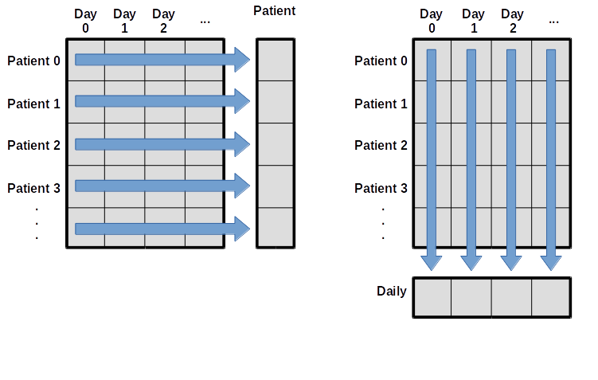
If you are interested in learning more about functions available in a package, you can check out the its documentation. Pandas is very famous and has a extensive documentation, for example you could check out the “Getting started tutorials”.
Output the data for the last 10 days of the data of the first 10 patients.
Output the minimum, maximum, and mean inflammation for the Day 20.
Compute the average inflammation for each days for the first 10 patients.
Filter the data to keep only the patients that have an average inflammation across days greater than 6.
Filter the data to keep only the patients that have a median inflammation across days greater than 6. Show only the last 10 days of the filtered data.
A good way to develop insight is often to visualize data. We can explore a few features of Python’s matplotlib library here. While there is no official plotting library, matplotlib is one of the standard packages to create visualizations in Python and is widely used in science.
As for any package, we need to install it one on our computer to then be able to import it in our script and use its functions.
Remember that installing a package is done outside of the python interpreter, in command line in a terminal.
# In Linux/MacOS
python -m pip install matplotlib
# In Windows
py -m pip install matplotlibTo shorten the name of the package when we call its functions, we can import it with a nickname, as follows:
import pandas as pd
data = pd.read_csv('data/inflammation-01.csv', index_col=0)For matplotlib, we usually import like so:
import matplotlib.pyplot as pltpyplot is one of the modules of matplotlib. It contains functions to generate basic plots. We can display a heatmap of our data:
image = plt.imshow(data)
plt.show()
Each row in the heat map corresponds to a patient in the clinical trial dataset, and each column corresponds to a day in the dataset. Blue pixels in this heat map represent low values, while yellow pixels represent high values. As we can see, the general number of inflammation flare-ups for the patients rises and falls over a 40-day period. So far so good as this is in line with our knowledge of the clinical trial.
This first way of plotting is function-oriented. It relies on pyplot to implicitly create and manage the Figures and Axes, and use pyplot functions for plotting.
image = plt.imshow(data)
plt.show()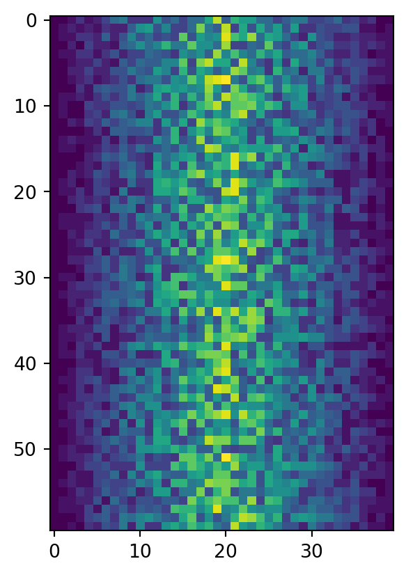
There is a second way of plotting called object-oriented. It needs to explicitly create Figures and Axes, and call methods on them (the “object-oriented (OO) style”).
fig = plt.figure()
ax = fig.add_subplot(1, 1, 1)
ax.imshow(data)
fig.tight_layout()
plt.show()
You might encounter both styles of coding.
fig refers to the overall figure — the entire canvas that holds everything, including one or more plots. ax is the specific subplot (axes) where your data is drawn. In simple plots, we often interact only with ax to label axes or plot data. However, fig becomes useful when you want to set the overall figure title, adjust layout, or save the figure to a file.
The function plt.figure() creates a space into which we will place all of our plots. Each subplot is placed into the figure using its add_subplot method. The add_subplot method takes 3 parameters. The first nrows denotes how many total rows of subplots there are, the second parameter ncols refers to the total number of subplot columns, and the final parameter index denotes which subplot your variable is referencing (left-to-right, top-to-bottom).
Notice that the names of the functions/methods called are not the same: the function xlabel() is used for the function-oriented manner and the method set_xlabel() is used for the object-oriented.
Matplotlib graphs your data on Figures, each of which can contain one or more Axes. An Axes is an area where points can be specified in terms of x-y coordinates.
Axes contains a region for plotting data and includes generally two Axis objects (2D plots), a title, an x-label, and a y-label. The Axes methods (e.g. .set_xlabel()) are the primary interface for configuring most parts of your plot (adding data, controlling axis scales and limits, adding labels etc.).
An Axis sets the scale and limits and generate ticks (the marks on the Axis) and ticklabels (strings labeling the ticks).
Be aware of the difference between Axes and Axis.
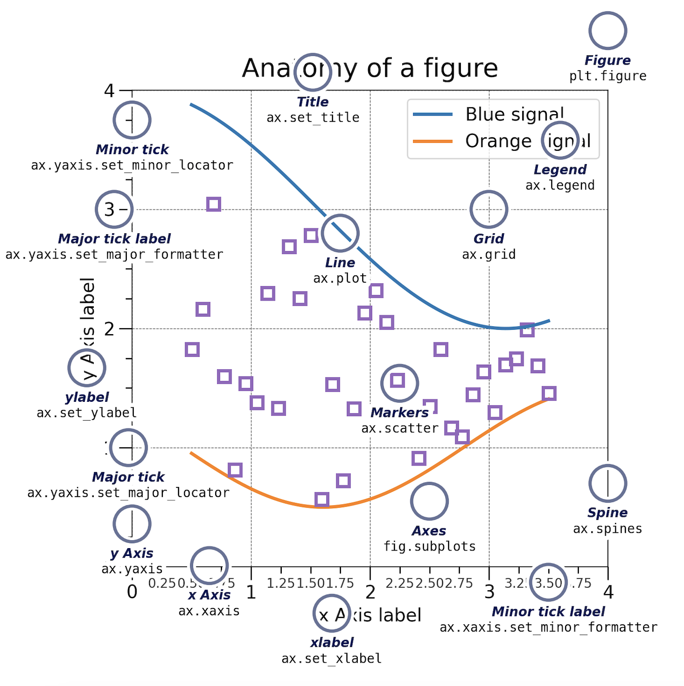
There are many other plot available: .plot(), .scatter(), .bar(), .hist(), .pie(), .boxplot()…
Let’s take a look at the average inflammation over time:
ave_inflammation = data.mean(axis=0)
fig = plt.figure()
ax = fig.add_subplot(1, 1, 1)
ax.plot(ave_inflammation)
fig.tight_layout()
plt.show()
The x-axis of this plot represents the days of the clinical trial, while the y-axis represents the average inflammation level across all patients for each day. The plot shows a clear pattern of increasing inflammation levels over the first 20 days, followed by a decrease in inflammation levels over the remaining 20 days. This pattern is consistent with what we observed in the heat map and with our knowledge of the clinical trial.
Since our column names are Day 1, Day 2, etc., the x-axis of the plot is labeled with these column names. If we want to label the x-axis with the actual day numbers (1, 2, 3, etc.), we can modify the code as follows:
import numpy as np
ave_inflammation = data.mean(axis=0)
fig = plt.figure()
ax = fig.add_subplot(1, 1, 1)
ax.plot(ave_inflammation)
ax.set_xlabel('Days')
ax.set_ylabel('Average Inflammation')
ax.set_xticks(np.arange(start=0, stop=40, step=5))
plt.show()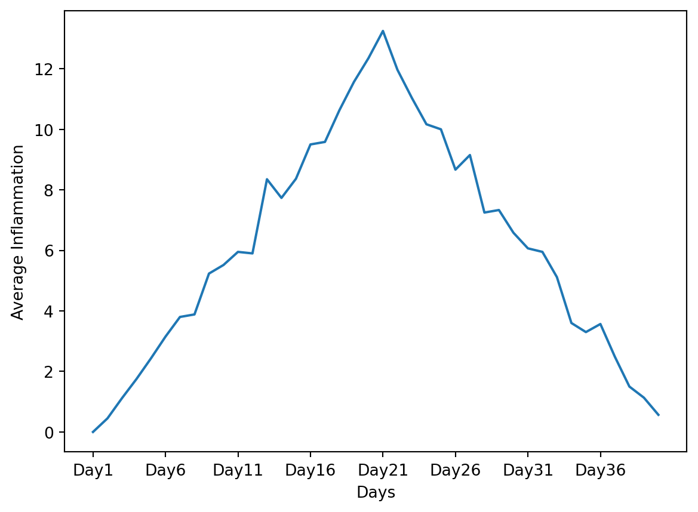
For this solution we needed to import the numpy package, which is a fundamental package for scientific computing in Python. It provides support for arrays, matrices, and a large collection of mathematical functions to operate on these data structures.
Here, np.arange() is a function from the numpy package that generates an array of evenly spaced values within a specified range. In this case, np.arange(start=0, stop=40, step=5) generates an array of values starting from 0 up to (but not including) 40, with a step of 5. This means it will generate the values [0, 5, 10, 15, 20, 25, 30, 35].
ax.set_xticks() expects a list of positions on the x-axis where the ticks should be placed. By passing the array generated by np.arange(), we are specifying that we want ticks at those positions (0, 5, 10, 15, 20, 25, 30, 35) on the x-axis of our plot. This allows us to label the x-axis with the actual day numbers corresponding to our data.
We also modified the labels of the x and y axes with ax.set_xlabel() and ax.set_ylabel() to make the plot more informative.
You can group similar plots in a single figure using subplots. The parameter figsize tells Python how big to make this space. Each subplot is placed into the figure using fig.add_subplot(), which takes 3 parameters nrows, ncols and index. Each subplot is stored in a different variable (axes1, axes2, axes3). Once a subplot is created, the axes can be titled using the ax.set_xlabel() command (or ax.set_ylabel()). Here are our three plots side by side:
import matplotlib.pyplot as plt
import pandas as pd
data = pd.read_csv('data/inflammation-01.csv', index_col=0)
fig = plt.figure(figsize=(10.0, 3.0))
axes1 = fig.add_subplot(1, 2, 1)
axes2 = fig.add_subplot(1, 2, 2)
axes1.set_xlabel('Days')
axes1.set_ylabel('Patient')
axes1.imshow(data)
ave_inflammation = data.mean(axis=0)
axes2.set_xlabel('Days')
axes2.set_ylabel('Average Inflammation')
axes2.plot(ave_inflammation)
axes2.set_xticks(np.arange(start=0, stop=40, step=5))
fig.tight_layout()
plt.show()
You can save a figure with the fig.savefig() method, which takes as input the name of the file you want to save the figure to. The file will be saved in the current working directory, so make sure to provide the correct path if you want to save it somewhere else.
fig.savefig('data/figure.png')One could also run:
plt.savefig('data/figure.png')<Figure size 672x480 with 0 Axes>The matplotlib.pyplot module works by automatically referencing the current active figure (i.e., the most recently created or interacted-with figure).
But be careful, after a figure has been displayed to the screen (e.g. with plt.show()) matplotlib will make this variable refer to a new empty figure. Therefore, make sure you call plt.savefig() before the plot is displayed to the screen, otherwise you may find a file with an empty plot.
The plot can also be save as ps, pdf or svg. Moreover, the resolution can be modified. See the documentation of .savefig() for more parameters.
For more information, check out the following ressources:
Create a figure with two subplots, the one on the left being a boxplot (.boxplot()) of the average inflammation, and the one on the right being a histogram (.hist()) of the average inflammation. Make them one on top of one another instead of side by side. You can also set the x and y labels of the two plots to make them more informative.
The result should look something like this:
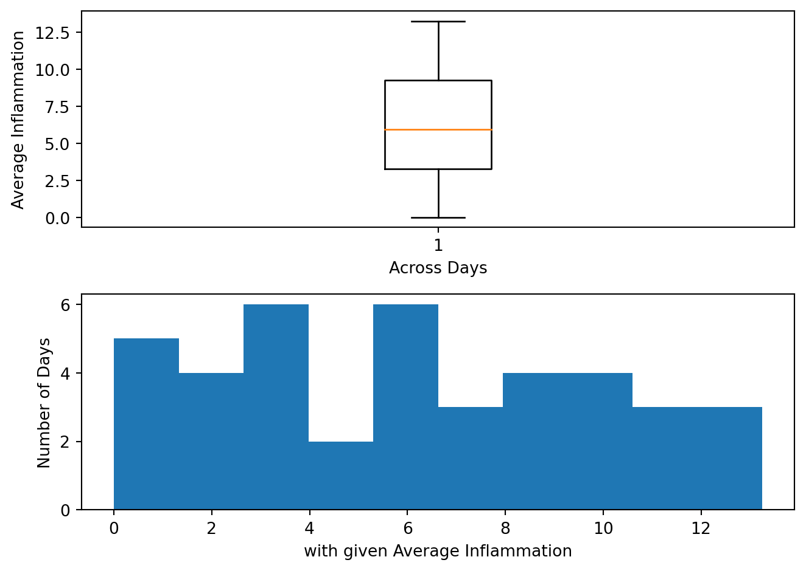
We were provided with 9 more trial data, and we want to load and explore it as well.
Our goal now is to process all the inflammation data we have, which means that we still have eleven more files to go!
The natural first step is to collect the names of all the files that we have to process. In Python, a list is a way to store multiple values together. In this episode, we will learn how to store multiple values in a list as well as how to work with lists.
Data structures are a collection of data types (e.g. numerical, characters) and/or data structures, organized in some way. Lists are one of the data structures in Python. A list is a collection which is ordered and changeable. It allows duplicate members. They are created using square brackets [].
We create a list by putting values inside square brackets and separating the values with commas:
odds = ['one', 3, 5, 7]
print('odds are:', odds)odds are: ['one', 3, 5, 7]Notice that lists can contain elements of different types, here strings and integers.
We can access elements of a list using indices, i.e. numbered positions of elements in the list. The first item has index [0], the second item has index [1] etc.
print('first element:', odds[0])
print('last element:', odds[3])
print('"-1" element:', odds[-1])first element: one
last element: 7
"-1" element: 7You can count backwards, with the index [-1] that retrieves the last item, [-2] the second to last, and so on. Because of this, odds[3] and odds[-1] point to the same element here.
Subsets of lists and strings can be accessed by specifying ranges of values in brackets, similar to how we accessed ranges of positions in a pandas DataFrame. This is commonly referred to as “slicing” the list/string.
binomial_name = 'Drosophila melanogaster'
group = binomial_name[0:10]
print('group:', group)
species = binomial_name[11:23]
print('species:', species)
chromosomes = ['X', 'Y', '2', '3', '4']
autosomes = chromosomes[2:5]
print('autosomes:', autosomes)group: Drosophila
species: melanogaster
autosomes: ['2', '3', '4']By leaving out the start value, the range will start at the first item:
chromosomes[:2]['X', 'Y']Similarly, by leaving out the end value, the range will end at the last item.
chromosomes[2:]['2', '3', '4']Remember, one way to recall how slices work is to think of the indices as pointing between characters, with the left edge of the first character numbered 0. Then the right edge of the last character of a string of n characters has index n, for example:
+---+---+---+---+---+---+
| P | y | t | h | o | n |
+---+---+---+---+---+---+
0 1 2 3 4 5 6
-6 -5 -4 -3 -2 -1The first row of numbers gives the position of the indices 0…6 in the string; the second row gives the corresponding negative indices. The slice from i to j consists of all characters between the edges labeled i and j, respectively.
You can get how many items are in a list with len().
len(chromosomes)5There is one important difference between lists and strings: we can change the values in a list, but we cannot change individual characters in a string. For example:
names = ['Curie', 'Darwing', 'Turing'] # typo in Darwin's name
print('names is originally:', names)
names[1] = 'Darwin' # correct the name
print('final value of names:', names)names is originally: ['Curie', 'Darwing', 'Turing']
final value of names: ['Curie', 'Darwin', 'Turing']works, but:
name = 'Darwin'
name[0] = 'd'--------------------------------------------------------------------------- TypeError Traceback (most recent call last) Cell In[78], line 2 1 name = 'Darwin' ----> 2 name[0] = 'd' TypeError: 'str' object does not support item assignment
does not.
Data which can be modified in place is called mutable, while data which cannot be modified is called immutable. Strings and numbers are immutable. This does not mean that variables with string or number values are constants, but when we want to change the value of a string or number variable, we can only replace the old value with a completely new value.
Lists and pandas DataFrame, on the other hand, are mutable: we can modify them after they have been created. We can change individual elements, append new elements, or reorder the whole list. For some operations, like sorting, we can choose whether to use a function that modifies the data in-place or a function that returns a modified copy and leaves the original unchanged.
Be careful when modifying data in-place. If two variables refer to the same list, and you modify the list value, it will change for both variables!
seq = ['ATGAAGGGTCCAAAA', 'AGTCCCCGTATGAT', 'ACCT', 'ACCT']
seq_mutated = seq # <-- seq and seq_mutated point to the *same* list data in memory
seq_mutated[-1] = 'AGGT'
print('sequences in seq:', seq)
print('sequences in seq_mutated:', seq_mutated)sequences in seq: ['ATGAAGGGTCCAAAA', 'AGTCCCCGTATGAT', 'ACCT', 'AGGT']
sequences in seq_mutated: ['ATGAAGGGTCCAAAA', 'AGTCCCCGTATGAT', 'ACCT', 'AGGT']If you want variables with mutable values to be independent, you must make a copy of the value when you assign it.
seq = ['ATGAAGGGTCCAAAA', 'AGTCCCCGTATGAT', 'ACCT', 'ACCT']
seq_mutated = list(seq) # <-- makes a *copy* of the list
seq_mutated[-1] = 'AGGT'
print('sequences in seq:', seq)
print('sequences in seq_mutated:', seq_mutated)sequences in seq: ['ATGAAGGGTCCAAAA', 'AGTCCCCGTATGAT', 'ACCT', 'ACCT']
sequences in seq_mutated: ['ATGAAGGGTCCAAAA', 'AGTCCCCGTATGAT', 'ACCT', 'AGGT']Because of pitfalls like this, code which modifies data in place can be more difficult to understand. However, it is often far more efficient to modify a large data structure in place than to create a modified copy for every small change. You should consider both of these aspects when writing your code.
Since a list can contain any Python data types/structures, it can even contain other lists.
For example, you could represent sequences in a list of lists, where each inner list contains the sequences of one patient:
seqs = [['ATGAAGGGTCCAAAA', 'AGTCCCCGTATGAT', 'ACCT', 'ACCT'],
['ATGAAGGGTCCAAAA', 'AGTCCCCGTATGAT', 'ACCT', 'AGGT'],
['ATGAAGGGTCCAAAA', 'AGTCCCCGTATGAT', 'ACCT', 'TCCA'],
['ATGAAGGGTCCAAAA', 'AGTCCCCGTATGAT', 'AGGT', 'ACCT']]First, you can reference each row (i.e. patient):
print(seqs[0]) # sequences for first patient['ATGAAGGGTCCAAAA', 'AGTCCCCGTATGAT', 'ACCT', 'ACCT']To reference a specific sequence, you can use two indices. The first index represents the patient (from top to bottom) and the second index represents the specific sequence (from left to right).
print(seqs[1][-1]) # last sequence for second patientAGGTYou could also access a specific base of a sequence:
print(seqs[1][-1][0]) # first (0) base of last (-1) sequence for second (1) patientAThere are many ways to change the content of lists besides assigning new values to individual elements:
odds.append(11)
print('odds after adding a value:', odds)odds after adding a value: ['one', 3, 5, 7, 11]removed_element = odds.pop(0)
print('odds after removing the first element:', odds)
print('removed_element:', removed_element)odds after removing the first element: [3, 5, 7, 11]
removed_element: oneodds.reverse()
print('odds after reversing:', odds)odds after reversing: [11, 7, 5, 3]While modifying in place, it is useful to remember that Python treats lists in a slightly counter-intuitive way.
As we saw earlier, when we modified the seq list item in-place, if we make a list, (attempt to) copy it and then modify this list, we can cause all sorts of trouble. This also applies to modifying the list using the above functions:
odds = [3, 5, 7]
primes = odds
primes.append(2)
print('primes:', primes)
print('odds:', odds)primes: [3, 5, 7, 2]
odds: [3, 5, 7, 2]This is because Python stores a list in memory, and then can use multiple names to refer to the same list. If all we want to do is copy a (simple) list, we can again use the list function, so we do not modify a list we did not mean to:
odds = [3, 5, 7]
primes = list(odds)
primes.append(2)
print('primes:', primes)
print('odds:', odds)primes: [3, 5, 7, 2]
odds: [3, 5, 7]Here are a few methods for lists:
| Method | Description |
|---|---|
.append() |
Inserts an item at the end |
.insert() |
Inserts an item at the specified index |
.extend() |
Append elements from another list to the current list |
.remove() |
Removes the first occurance of a specified item |
.pop() |
Removes the specified (by default last) index |
You could also concatenate two lists with the + or * operator:
seqs[0] * 2
seqs[0] + seqs[1]['ATGAAGGGTCCAAAA',
'AGTCCCCGTATGAT',
'ACCT',
'ACCT',
'ATGAAGGGTCCAAAA',
'AGTCCCCGTATGAT',
'ACCT',
'AGGT']l = ['AAA', 'AAT', 'AAC'], and add AAG at the end, using .append().T into U in the element AAT, using .replace(), which is a string method (documentation here or help(str.replace)).Use slicing to access only the last four characters of a string or entries of a list.
string_for_slicing = 'Observation date: 02-Feb-2013'
list_for_slicing = [['fluorine', 'F'],
['chlorine', 'Cl'],
['bromine', 'Br'],
['iodine', 'I'],
['astatine', 'At']]Would your solution work regardless of whether you knew beforehand the length of the string or list (e.g. if you wanted to apply the solution to a set of lists of different lengths)? If not, try to change your approach to make it more robust.
Hint: Remember that indices can be negative as well as positive
We have access to ten data sets right now, and we will want to create the same plots for all of them. We could copy and paste the code we used to create the plot for the first data set, and change the name of the data variable each time, but that would be very inefficient and error-prone. We want to create plots for all of our data sets with a single statement. To do that, we’ll have to teach the computer how to repeat things.
Before applying loops to our data sets, we will first learn how to use loops with simpler examples.
An example task that we might want to repeat is accessing numbers in a list, which we will do by printing each number on a line of its own.
odds = [1, 3, 5, 7]In Python, a list is basically an ordered collection of elements, and every element has a unique number associated with it, its index. This means that we can access elements in a list using their indices. For example, we can get the first number in the list odds, by using odds[0]. One way to print each number is to use four print statements:
print(odds[0])
print(odds[1])
print(odds[2])
print(odds[3])1
3
5
7This is a bad approach for three reasons:
print(odds[0])
print(odds[1])
print(odds[2])
print(odds[3])
print(odds[4])1
3
5
7--------------------------------------------------------------------------- IndexError Traceback (most recent call last) Cell In[97], line 5 3 print(odds[2]) 4 print(odds[3]) ----> 5 print(odds[4]) IndexError: list index out of range
Here’s a better approach: a for loop
odds = [1, 3, 5, 7]
for num in odds:
print(num)1
3
5
7What it does is the following: it processes each element in the list odds, called in the following code num, and prints it.
A for loop is an iteration. An iteration involves repeating a set of instructions or a block of code multiple times. Iterating through data structures like lists allows you to access each element individually, making it easier to perform operations on them.
When using a for loop, you iterate over a sequence of elements, such as a list. Here is the general syntax of a for loop in Python:
for item in data_structure:
do task aThere must be a colon at the end of the line starting the loop, and we must indent anything we want to run inside the loop. Unlike many other languages, there is no command to signify the end of the loop body (e.g. end for); everything indented after the for statement belongs to the loop.
The loop will execute the indented block of code for each element in the sequence until all elements have been processed. This is particularly useful when you know the number of times you need to iterate.
Using the odds example above, the loop might look like this:

where each number (num) in the variable odds is looped through and printed one number after another. The other numbers in the diagram denote which loop cycle the number was printed in (1 being the first loop cycle, and 6 being the final loop cycle).
We can call the loop variable (here num) anything we like.
odds = [1, 3, 5, 7]
for banana in odds:
print(banana)1
3
5
7But it is a good idea to choose variable names that are meaningful, otherwise it would be more difficult to understand what the loop is doing.
Python relies on indentation (the spaces at the beginning of the lines).
Indentation is not just for readability. In Python, you use spaces or tabs to indent code blocks. Python uses it to determine the scope of functions, loops, conditional statements, and classes.
Any code that is at the same level of indentation is considered part of the same block. Blocks of code are typically defined by starting a line with a colon (:) and then indenting the following lines.
When you have nested structures like a loop inside another loop, you must further to show the hierarchy. Each level of indentation represents a deeper level of nesting.
It’s essential to be consistent with your indentation throughout your code. The styling guide of Python PEP8 recommands 4 spaces as indentation.
Here are two codes, they all are, can you tell why?
Of course, you can run them and read the error that Python gives!
list_for_slicing = [['fluorine', 'F'],
['chlorine', 'Cl'],
['bromine', 'Br'],
['iodine', 'I'],
['astatine', 'At']]
for element in list_for_slicing:
for subelement in element:
print(subelement) odds = [3, 5, 7]
for num in odds + odds
print(num) Here’s another loop that repeatedly updates a variable:
length = 0
names = ['Curie', 'Darwin', 'Turing']
for value in names:
length = length + 1
print('There are', length, 'names in the list.')There are 3 names in the list.It’s worth tracing the execution of this little program step by step. Since there are three names in names, the statement on line 4 will be executed three times. The first time around, length is 0 (the value assigned to it on line 1) and value is Curie. The statement adds 1 to the old value of length, producing 1, and updates length to refer to that new value. The next time around, value is Darwin and length is 1, so length is updated to be 2. After one more update, length is 3; since there is nothing left in names for Python to process, the loop finishes and the print() function on line 5 tells us our final answer.
Of course we could have just used length(names) to get the same answer, but this example is meant to illustrate how loops work, and how they can be used to update variables.
Note that a loop variable is a variable that is being used to record progress in a loop. It still exists after the loop is over, and we can re-use variables previously defined as loop variables as well:
name = 'Rosalind'
for name in ['Curie', 'Darwin', 'Turing']:
print(name)
print('after the loop, name is', name)Curie
Darwin
Turing
after the loop, name is TuringWe can modify a variable using a loop, but we cannot modify an element of a list so easily.
Here is an example:
all_codons = [
'AAA', 'AAC', 'AAG', 'AAT',
'ACA', 'ACC', 'ACG', 'ACT',
'AGA', 'AGC', 'AGG', 'AGT',
'ATA', 'ATC', 'ATG', 'ATT',
'CAA', 'CAC', 'CAG', 'CAT',
'CCA', 'CCC', 'CCG', 'CCT',
'CGA', 'CGC', 'CGG', 'CGT',
'CTA', 'CTC', 'CTG', 'CTT',
'GAA', 'GAC', 'GAG', 'GAT',
'GCA', 'GCC', 'GCG', 'GCT',
'GGA', 'GGC', 'GGG', 'GGT',
'GTA', 'GTC', 'GTG', 'GTT',
'TAA', 'TAC', 'TAG', 'TAT',
'TCA', 'TCC', 'TCG', 'TCT',
'TGA', 'TGC', 'TGG', 'TGT',
'TTA', 'TTC', 'TTG', 'TTT'
]
for codon in all_codons:
codon = codon.replace('T', 'U')
print(all_codons)['AAA', 'AAC', 'AAG', 'AAT', 'ACA', 'ACC', 'ACG', 'ACT', 'AGA', 'AGC', 'AGG', 'AGT', 'ATA', 'ATC', 'ATG', 'ATT', 'CAA', 'CAC', 'CAG', 'CAT', 'CCA', 'CCC', 'CCG', 'CCT', 'CGA', 'CGC', 'CGG', 'CGT', 'CTA', 'CTC', 'CTG', 'CTT', 'GAA', 'GAC', 'GAG', 'GAT', 'GCA', 'GCC', 'GCG', 'GCT', 'GGA', 'GGC', 'GGG', 'GGT', 'GTA', 'GTC', 'GTG', 'GTT', 'TAA', 'TAC', 'TAG', 'TAT', 'TCA', 'TCC', 'TCG', 'TCT', 'TGA', 'TGC', 'TGG', 'TGT', 'TTA', 'TTC', 'TTG', 'TTT']This is codon is a copy of the item in a list, not a reference to it. So changing it does not do anything to the original list.
You would have to use an iterator.
An iterator is a special object that gives values in succession.
A way to modify the list would be to use an iterator to access the original data. The range(start, stop, step) function creates an iterator to count from one integer to another with a certain step (an optional parameter).
for i in range(2, 10, 1):
print(i, end=' ')2 3 4 5 6 7 8 9 We could count from 0 to the size of the list, loop though every element of the list by calling them by their index, and modify them if necessary. That’s what the following code does:
for i in range(0, len(all_codons)):
if 'T' in all_codons[i] :
all_codons[i] = all_codons[i].replace('T', 'U')
print(all_codons)['AAA', 'AAC', 'AAG', 'AAU', 'ACA', 'ACC', 'ACG', 'ACU', 'AGA', 'AGC', 'AGG', 'AGU', 'AUA', 'AUC', 'AUG', 'AUU', 'CAA', 'CAC', 'CAG', 'CAU', 'CCA', 'CCC', 'CCG', 'CCU', 'CGA', 'CGC', 'CGG', 'CGU', 'CUA', 'CUC', 'CUG', 'CUU', 'GAA', 'GAC', 'GAG', 'GAU', 'GCA', 'GCC', 'GCG', 'GCU', 'GGA', 'GGC', 'GGG', 'GGU', 'GUA', 'GUC', 'GUG', 'GUU', 'UAA', 'UAC', 'UAG', 'UAU', 'UCA', 'UCC', 'UCG', 'UCU', 'UGA', 'UGC', 'UGG', 'UGU', 'UUA', 'UUC', 'UUG', 'UUU']A list is iterable but not an iterator. The difference is that they are reusable, see:
l = [1,2,3,4]
for i in l:
print(i)
for i in l:
print(i)1
2
3
4
1
2
3
4# Convert to iterable
il = iter(l)
for i in il:
print(i)
for i in il:
print(i)
print(all_codons)1
2
3
4
['AAA', 'AAC', 'AAG', 'AAU', 'ACA', 'ACC', 'ACG', 'ACU', 'AGA', 'AGC', 'AGG', 'AGU', 'AUA', 'AUC', 'AUG', 'AUU', 'CAA', 'CAC', 'CAG', 'CAU', 'CCA', 'CCC', 'CCG', 'CCU', 'CGA', 'CGC', 'CGG', 'CGU', 'CUA', 'CUC', 'CUG', 'CUU', 'GAA', 'GAC', 'GAG', 'GAU', 'GCA', 'GCC', 'GCG', 'GCU', 'GGA', 'GGC', 'GGG', 'GGU', 'GUA', 'GUC', 'GUG', 'GUU', 'UAA', 'UAC', 'UAG', 'UAU', 'UCA', 'UCC', 'UCG', 'UCU', 'UGA', 'UGC', 'UGG', 'UGU', 'UUA', 'UUC', 'UUG', 'UUU']Another useful function that returns an iterator is enumerate(). It is an iterator that generates pairs of index and value. It is commonly used when you need to access both the index and value of items simultaneously.
seq = 'ATGCATGC'
# Print index and identity of bases
for i, base in enumerate(seq):
print(i, base)0 A
1 T
2 G
3 C
4 A
5 T
6 G
7 CWrite a loop that calculates the sum of elements in a list by adding each element and printing the final value, so feeding the loop with the list [124, 402, 36] shoud print 562 after summing up.
As a final piece to processing our inflammation data, we need a way to get a list of all the files in our data directory whose names start with inflammation- and end with .csv. The following library will help us to achieve this:
import globThe glob library contains a function, also called glob, that finds files and directories whose names match a pattern. We provide those patterns as strings: the character * matches zero or more characters, while ? matches any one character. We can use this to get the names of all the CSV files in the current directory:
print(glob.glob('data/inflammation*.csv'))['data/inflammation-09.csv', 'data/inflammation-01.csv', 'data/inflammation-08.csv', 'data/inflammation-07.csv', 'data/inflammation-11.csv', 'data/inflammation-10.csv', 'data/inflammation-02.csv', 'data/inflammation-05.csv', 'data/inflammation-04.csv', 'data/inflammation-06.csv', 'data/inflammation-03.csv', 'data/inflammation-12.csv']As these examples show, glob.glob’s result is a list of file and directory paths in arbitrary order. This means we can loop over it to do something with each filename in turn. In our case, the “something” we want to do is generate a set of plots for each file in our inflammation dataset.
If we want to start by analyzing just the first three files in alphabetical order, we can use the sorted built-in function to generate a new sorted list from the glob.glob output:
import glob
import pandas as pd
import matplotlib.pyplot as plt
import numpy as np
filenames = sorted(glob.glob('data/inflammation*.csv'))
filenames = filenames[0:3] # For sake of time, we will only analyze the first three files
for filename in filenames:
print(filename)
data = pd.read_csv(filename, index_col=0)
fig = plt.figure(figsize=(10.0, 3.0))
axes1 = fig.add_subplot(1, 2, 1)
axes2 = fig.add_subplot(1, 2, 2)
axes1.set_xlabel('Days')
axes1.set_ylabel('Patient')
axes1.imshow(data)
ave_inflammation = data.mean(axis=0)
axes2.set_xlabel('Days')
axes2.set_ylabel('Average Inflammation')
axes2.plot(ave_inflammation)
axes2.set_xticks(np.arange(start=0, stop=40, step=5))
fig.tight_layout()
plt.show()data/inflammation-01.csv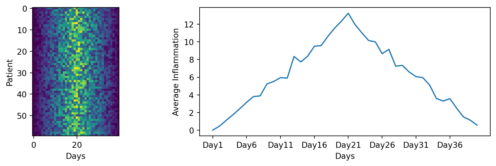
data/inflammation-02.csv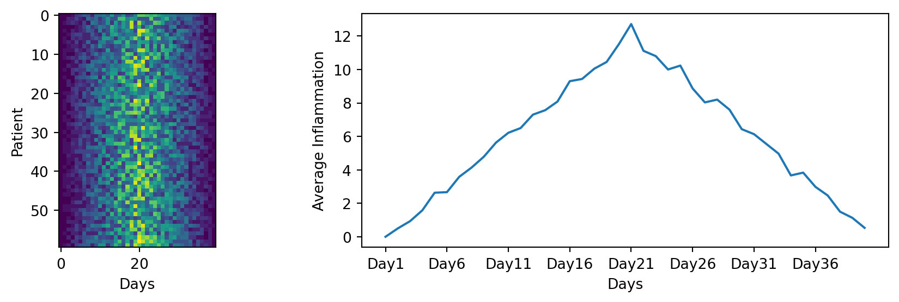
data/inflammation-03.csv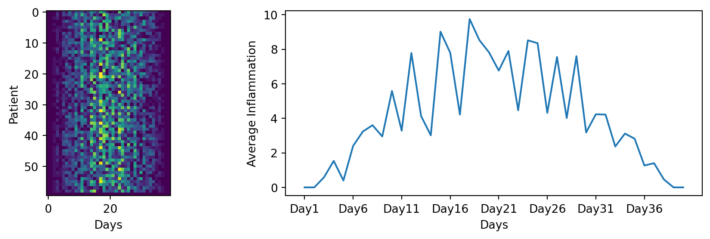
Here we are creating a loop that iterates through the list of filenames, and for each filename, it reads the data, creates a figure, and generates the two plots as we did before. This way, we can easily generate plots for all the files in our dataset without having to copy and paste code for each file.
This created 3 independent figures, one for each file.
We could also create one big figure with all the heatmap plots for all the files. What parameters of the fig.add_subplot() function would you change to do that? How should the loop be modified? Remember the enumerate() function that will be useful!
The 2 first plot show a similar trend, but the 3rd is different. If you look closely, in the 3rd heatmap, we can see that there are zero values sporadically distributed across all patients and days of the clinical trial, suggesting that there were potential issues with data collection throughout the trial. In addition, we can see that the last patient in the study didn’t have any inflammation flare-ups at all throughout the trial, suggesting that they may not even suffer from arthritis! Is there an issue with the data?
A good data miner does not only look at the mean to understand dataset…
Plot the minimum and maximum inflammation for each day.
Try to plot it for one of the files, and then create a loop to plot it for all the files. Make use of the methods .max() and min().
What is your conclusion on the trial data after looking at the heatmaps, mean, minimum and maximum inflammation?
Congrats! You now know the (very) basics of Python programming.
If you want to keep on practising with simple exercises, you can check out w3schools.
For more biology-related exercises check out pythonforbiologist.org, they have exercises availables in each chapters.
For french speakers, the AFPy (Association Francophone Python) has a learning tool called HackInScience.
Or keep on googling for more python exercises!
Here are some references and ressources that inspired this class :
Comment your code
Except for the shebang and coding specifications seen before (e.g. inside a string, defined but quotes
'or"), all things after a hashtag#character will be ignored by the interpreter until the end of the line. This is used to add comments in your code.Comments are used to:
This line is not evaluated:
This line is evaluated:
This line is evaluated up until the #:
This line is fully evaluated: